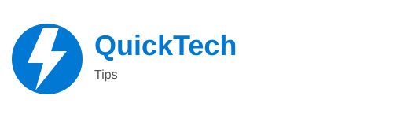

Tips Teknologi Cepat & Mudah
Tonton Reels TerbaruQuickTech Tips hadir untuk memberikan tips teknologi singkat, tutorial gadget, dan trik aplikasi yang mudah dipahami. Temukan video Reels terbaru dan tips praktis untuk sehari-hari.
Trik screenshot panjang hanya dalam 3 detik!
TontonBiar HP ngebut, hapus cache rutin!
TontonEdit foto keren tanpa bayar!
TontonKerja di PC jadi lebih cepat!
TontonTips biar baterai awet seharian!
TontonBuka aplikasi Google Drive di HP atau komputer. Login dengan akun Google kamu. Tekan tombol “+” (Tambah). Pilih Upload. Pilih file yang ingin dibackup (foto, video, dokumen). File akan otomatis tersimpan di cloud Google Drive.
Cara paling cepat: Geser layar ke atas (App Drawer) di HP Android. Gunakan kolom pencarian aplikasi di bagian atas. Ketik nama aplikasi yang kamu cari. 📌 Jika aplikasi ada di HP, biasanya akan langsung muncul di hasil pencari.
Gunakan aplikasi CapCut. Langkahnya: Buka aplikasi CapCut. Tekan New Project. Pilih video yang ingin diedit. Masuk ke menu Text. Pilih Auto Captions. Pilih bahasa (Indonesia atau lainnya). Tekan Start. 📌 Dalam beberapa detik, subtitle akan muncul otomatis mengikuti suara di video.